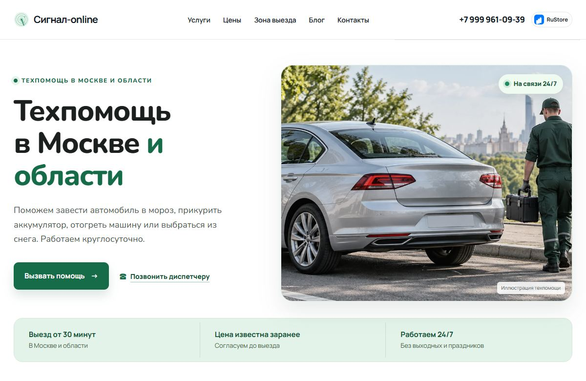

Кейс 02 / Сайт услуг
Сигнал Онлайн
Сервис выездной техпомощи в Москве и области. Среди услуг запуск двигателя, отогрев, вскрытие автомобиля и эвакуация.
signal-online.ru ↗
Что реализовано
Маршрут к заявке
Главная группирует частые зимние ситуации и ведёт к услугам, условиям выезда и форме. Местоположение можно указать адресом или точкой на карте.
Условия выезда
На сайте есть прайс по услугам и описание зоны обслуживания. Отдельные страницы помогают понять, что входит в услугу и когда действуют доплаты.